Tsuchiura, Ibaraki: things to do, food and stays
Tsuchiura · Ibaraki
Tsuchiura
Highlighted on the Ibaraki map.
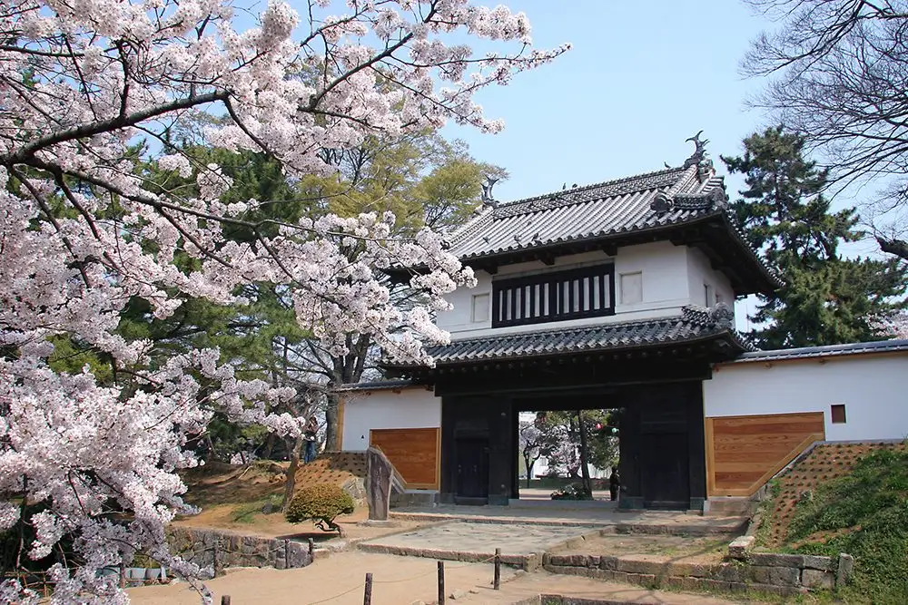
Stay
ホテルルートイン土浦
Hotel Route Inn Tsuchiura
Hotel in Manabeshin, Tsuchiura with buffet meals and breakfast available; 7-minute drive from Tsuchiura Station.
ビジネス旅館土浦
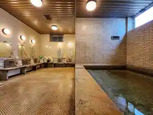
Business Ryokan Tsuchiura
Ryokan inn at Tsuchiurashideyuitsu Onsen in Fujisaki, Tsuchiura with a sauna and business travelers.
ビジネスホテル若藤
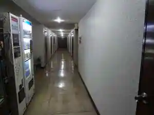
Business Hotel Jaku Fuji
Hotel in Sakura, Tsuchiura with Wi-Fi and business travelers.
ビジネスホテル小桜館
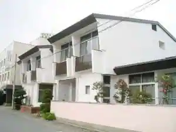
Business Hotel Kozakura Kan
Hotel in Sakura, Tsuchiura with business travelers.
ベルズイン・土浦
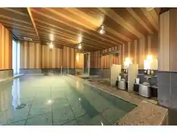
Beruzuin Tsuchiura
Inn in Yamato, Tsuchiura with breakfast available and Wi-Fi.
ホテルフィット
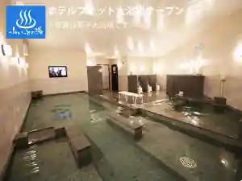
Hotel Fitto
Hotel in Minato, Tsuchiura with a large communal bath.
【JR土浦駅直結】BEB5土浦 by 星野リゾート
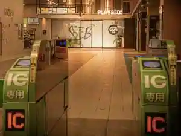
(JR Tsuchiura Eki Chokketsu) BEB5 Tsuchiura by Hoshino Resort
東横ＩＮＮ土浦駅東口

Toyoko INN Tsuchiura Eki Higashiguchi
Inn in Minato, Tsuchiura with breakfast available.
ザ・セレクトン土浦駅前
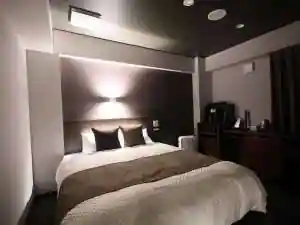
Za Serekuton Tsuchiura Ekimae
Inn in Minato, Tsuchiura with a large communal bath; 4-minute walk from 19Nenshinkiopuntsuchiura Station.
ホテルグローバルビュー土浦
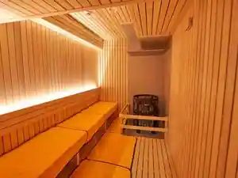
Hotel Gurobarubyu Tsuchiura
Hotel at Unatsukibitoko Onsen in Minato, Tsuchiura with a sauna and a large communal bath.
駅チカ快適 ホテルクラウンヒルズ土浦駅東
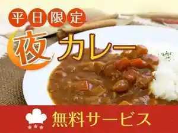
Eki Chika Kaiteki Hotel Kuraunhiruzu Tsuchiura Eki Higashi
Hotel in Minato, Tsuchiura with buffet meals and breakfast available.
ホテルマロウド筑波
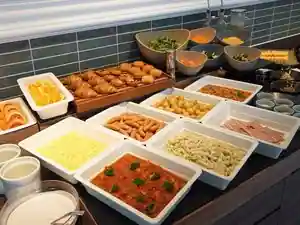
Hotel Maroudo Tsukuba
Hotel in Johoku, Tsuchiura with breakfast available and Wi-Fi.
Dining
よし町
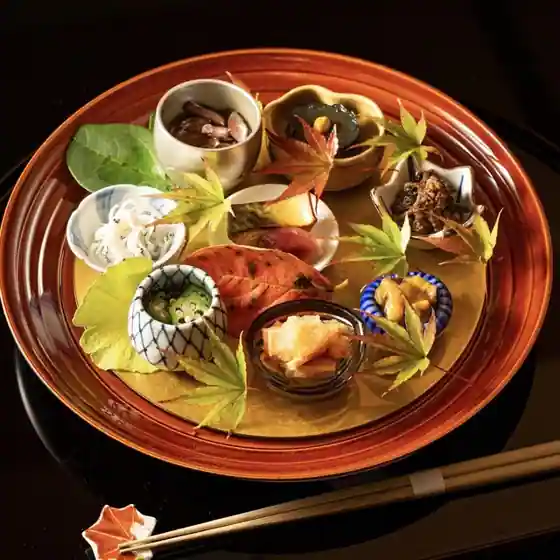
Yoshi Machi
特級鶏蕎麦 龍介
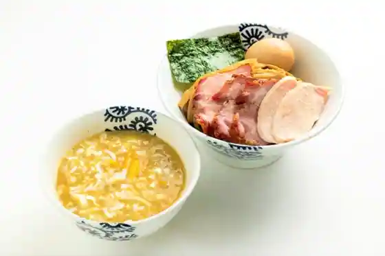
Tokkyu Niwatori Soba Ryusuke
良温
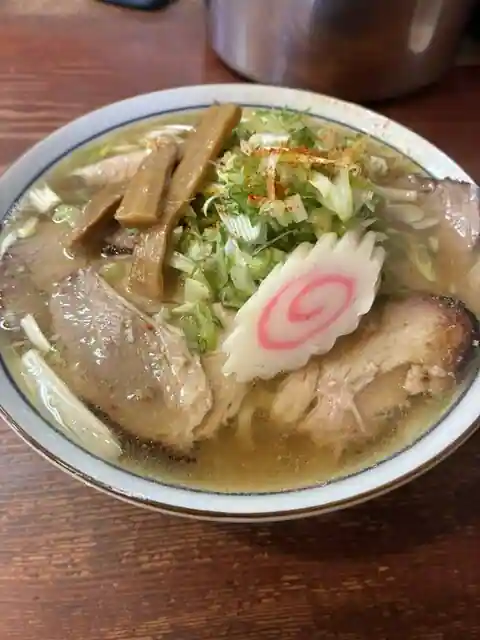
Ryo On
やきとり横丁
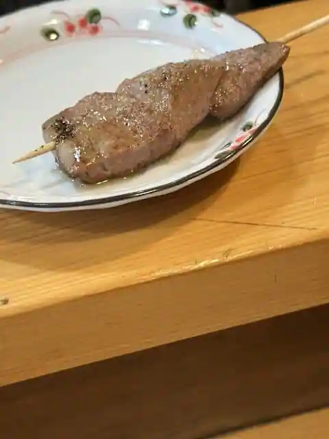
Yakitori Yokocho
亀城苑
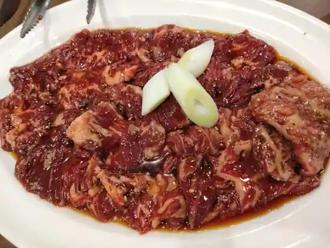
Kijo En
うまい家
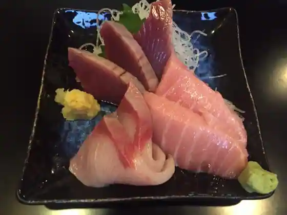
Umai Ie
特級鶏蕎麦 龍介 プレイアトレ土浦店
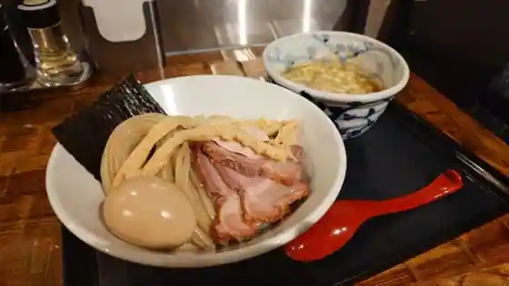
Tokkyu Niwatori Soba Ryusuke Pureiatore Tsuchiura
夢舎
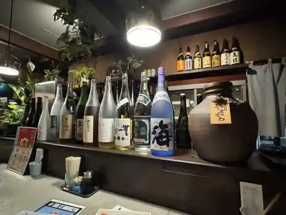
Yume Sha
和創旬 康べえ
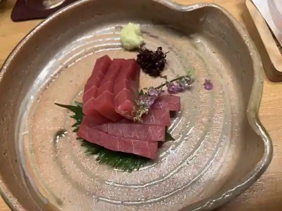
Wa So Jun Yasushi Be
きなり
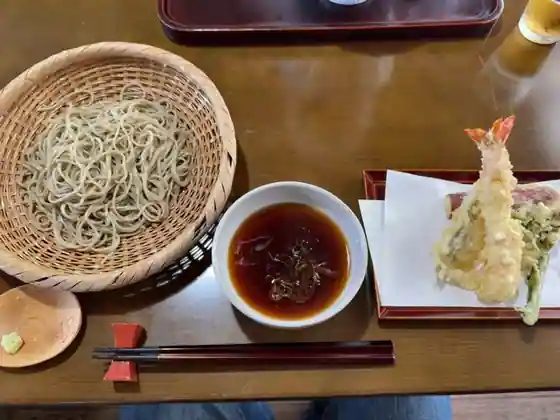
Kinari
レストラン 中台
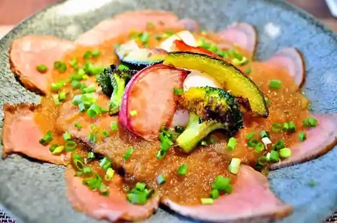
Restaurant Chutai
鳥平
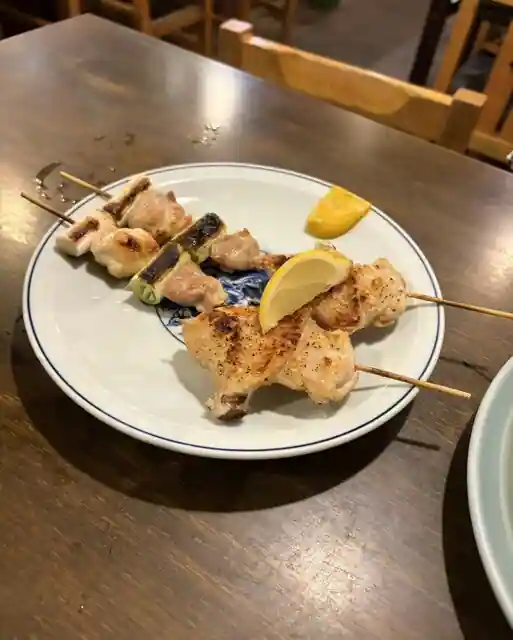
Tori Taira
麺屋 い志だ
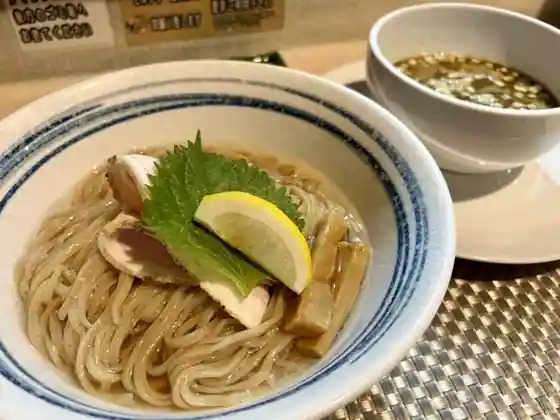
Men Ya I Kokorozashi Da
麺屋 京介
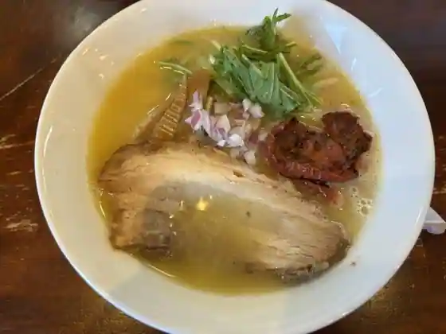
Men Ya Kyosuke
中村屋 蔵 荒川沖店
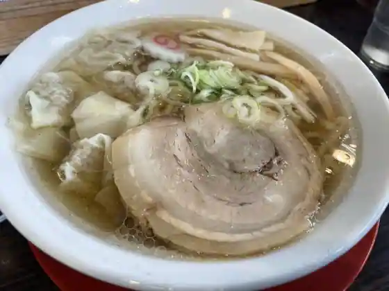
Nakamuraya Kura Arakawaoki
和乃貫山
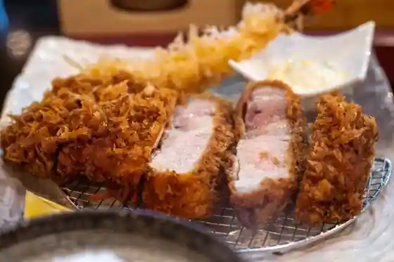
Wa No Kan Yama
土浦魚市場
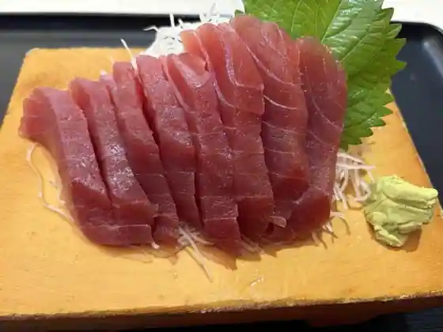
Tsuchiura Uoichiba
ほたて
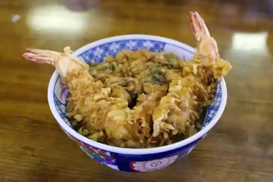
Hotate
洋食 大かわ
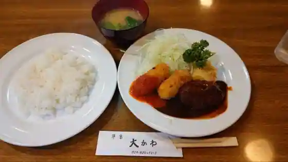
Yoshoku Oka Wa
バナナリーフ
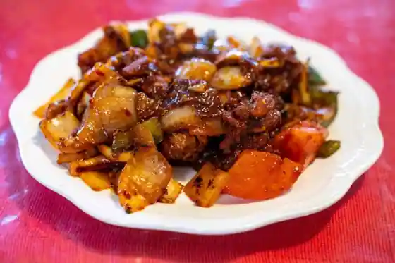
Bananarifu
大衆食堂 すずの木
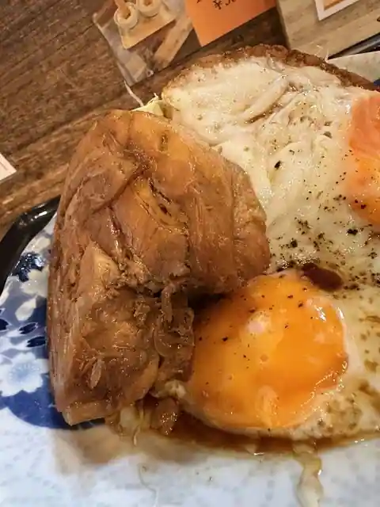
Taishu Shokudo Suzuno Ki
骨付がぶり鶏 がぶり亭
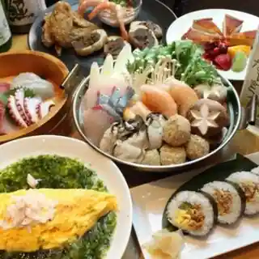
Hone Tsuki Gaburi Niwatori Gaburi Tei
とんかつ かつ吉
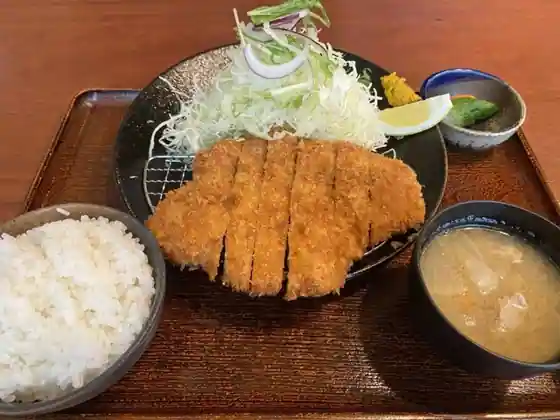
Tonkatsu Katsu Kichi
鮨の旦兵衛
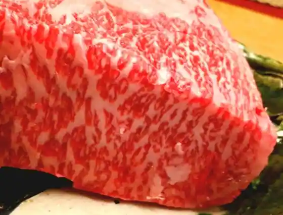
Sushi No Tan Be
Sights
Kasumigaura Kanko Yuransen Rakusumariina (Howaitoairisu Go)
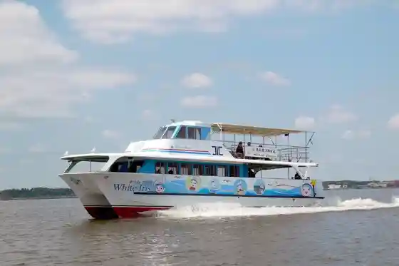
Kijo Park
Kasumigaura General Park
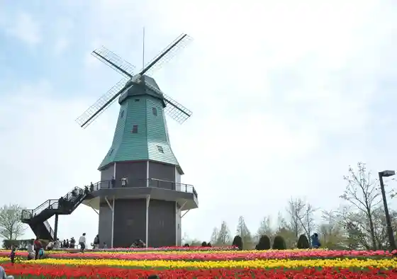
Yu Raku Village Tsuchiura Mise
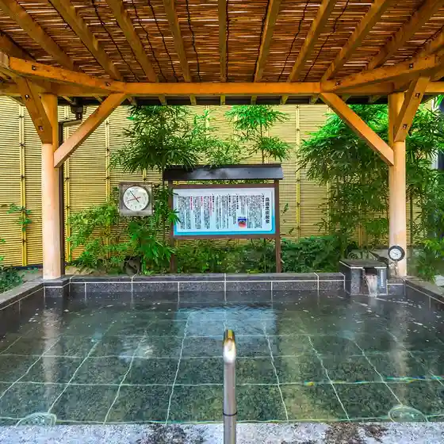
Tsuchiura Machikado Kura (Daitoku)
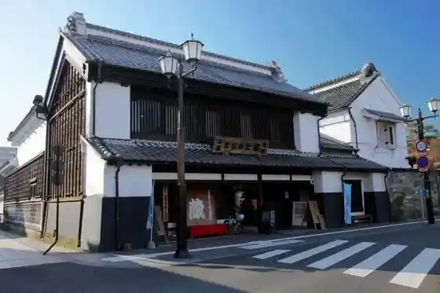
Kerogaro Farm
Otto Numa Park
Kissa Kura
Manabe no Sakura (Manabe Shogakko)
Shiba Numa Shoyu (Kabu)
Tsuchiura Machikado Kura (no Village)
Sho Town no Kan (Ono Sho Town Fureai Plaza)
Kanko Ho Eisen (Tsuchiura)
Hasu Ta (Ta Village Oki Yado Te Noji Ku)
Resutoran Chutai
Kasumigaura Kankyo Kagaku Center
Sakuragawa Tsutsumi
Soba Tokoro Sho Town Iori
Unagi Nishiki Mizu
Tsuchiura Ritsu Museum
Ue Takatsu Kaizuka Furusato Rekishi no Plaza (Koko Museum)
Shinkawa Tsutsumi
Ryugamine Cherry Blossoms
Resutoran Murayama Tei
Koryu Saron Sho Town
Yoshoku Jingisukan Hitsuji no Koya
Hitachi Aki Soba Tsuku Santei Kasumi Village
Jun Na Daruma
Tsuchiura Ichiko no Shidarezakura
Niihari Komachi Paraguraidasukuru
Sosaku Wagashi
JA Tsuchiura Sanfuresshu Hasu Village
Funachu ((Ari) Morishige Shoten)
JA Tsuchiura Sanfuresshu Niihari Mise
Shoku Raku BAR Takeo
JA Tsuchiura Sanfuresshu Tsuchiura Mise